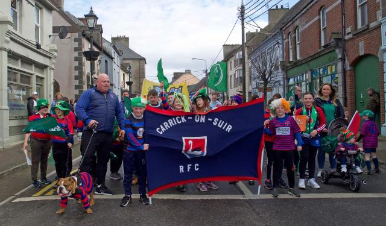

The Clancy Brothers Festival takes place every June in the town. Dedicated to the Irish folk group, the event revolves around music, art and culture in the town.
Every year on March 17, the St Patrick's Day parade can be watched from the guards barracks all the way through to the end of main street.
